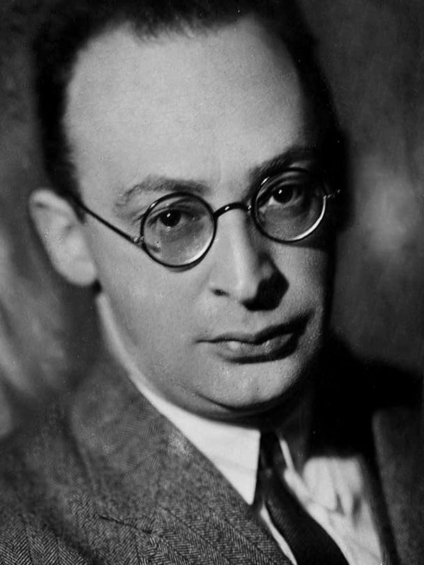
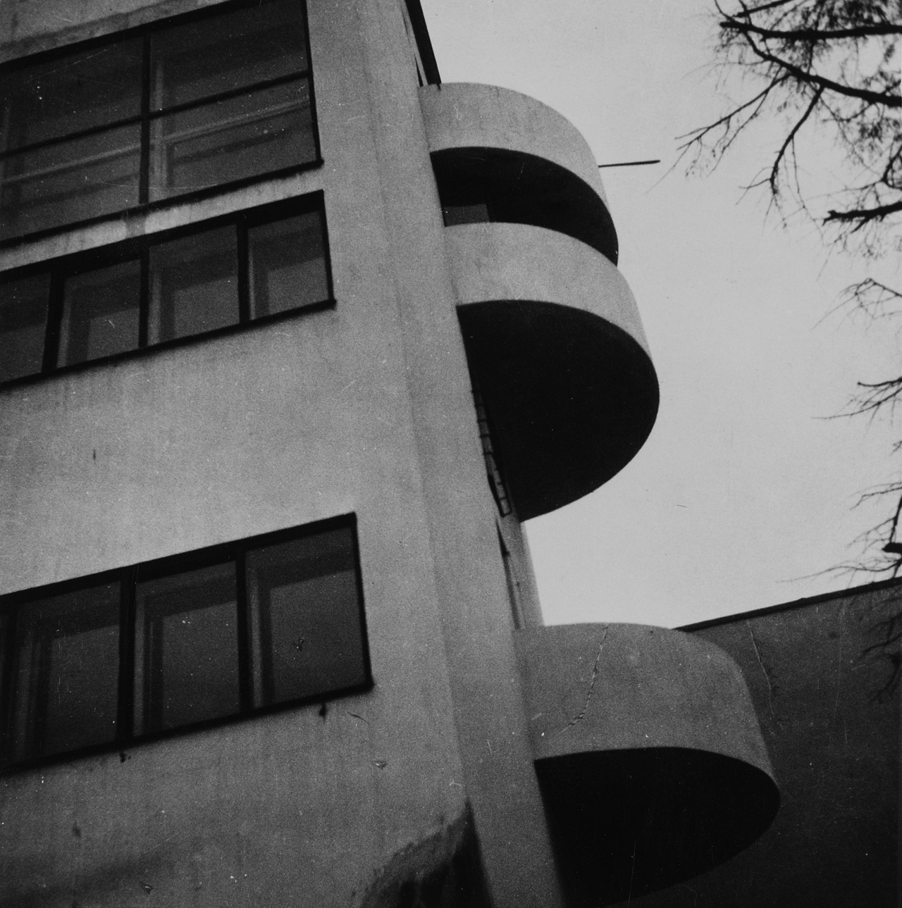
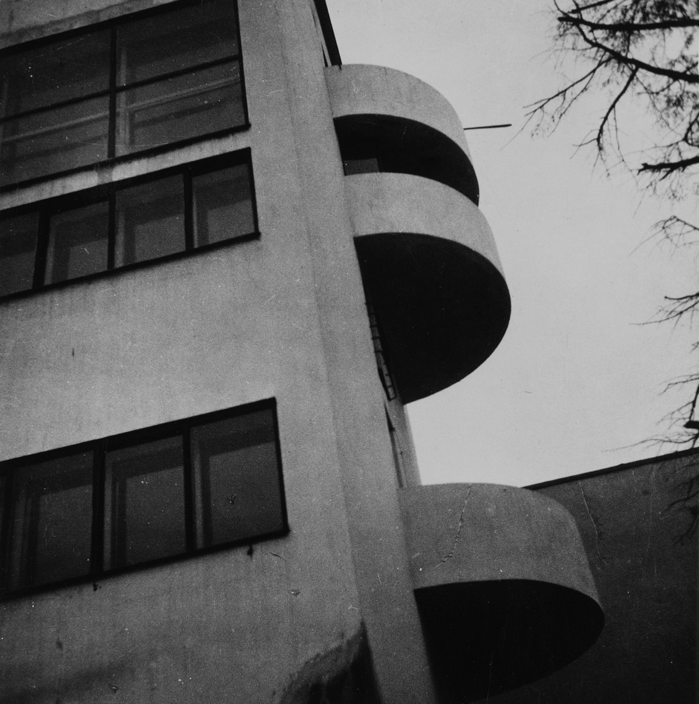
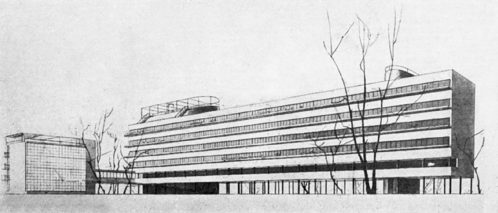

about project
about project
Дом Наркомфи́на — один из знаковых памятников архитектуры советского авангарда и конструктивизма.
Построен в 1928—1930 годах по проекту архитекторов Моисея Гинзбурга,
Игнатия Милиниса и инженера Сергея Прохорова для работников Народного комиссариата финансов СССР (Наркомфина).
Новинский бульвар, дом 25, корпус 1.
Из всех различных индивидуумов и групп, занимавшихся реформированием повседневной жизни и консолидации социализма в 1920-е годы, архитекторы занимали исключительное положение. Архитектурная инновация Дома Коммуны представляет наиболее полную попытку осуществления реформирования быта и консолидации советского социализма. Самой влиятельной группой архитекторов в этой области являлась ОСА (Объединение современных архитекторов, которую возглавлял М. Я. Гинзбургом). В то время как прочие реформаторы быта пытались внедрить реформистские практики в остатки существующих дореволюционных форм, группа ОСА (образована в 1925 году М. Я. Гинзбургом и братьями Весниными), более известная как конструктивисты, пыталась решить проблему «нового быта» напрямую созданием принципиально новой архитектуры и материальной культуры, основанных на коммунистических отношениях производства и потребления.
«Опытный дом переходного типа»
М. Я. Гинзбург
С. О. Хан-Магомедов отмечает созвучие дома Наркомфина 5 принципам Ле Корбюзье:
Заказчиком жилого комплекса выступал нарком финансов РСФСР (1924—1929) Н. А. Милютин, известный как автор схем социалистического расселения и градостроительных концепций соцгорода[11], он же определил функциональные характеристики будущего здания[12]. Сотрудничество наркома Н. А. Милютина и архитектора М. Я. Гинзбурга началось несколько раньше, на строительстве дома Госстраха (1926—1927), — Милютин был инициатором строительства двух домов Госстраха в Москве. Идеи Н. А. Милютина об устройстве жилища воплотились при создании дома Наркомфина (Дома-парохода, или 2-го дома СНК).
Идеи, связанные с планировочной и объёмной структурой, так же, как и с функциональным наполнением дома, изложены в публикациях журнала «Современная архитектура», докладе М. Я. Гинзбурга на пленуме Стройкома[2], а также в его книге «Жилище»[19].
Под строительство дома для работников Наркомата финансов в апреле 1929 года была отведена территория огородов, ранее принадлежавших двум усадьбам, жилые дома которых были выстроены в XIX веке по красной линии Новинского бульвара; в одном из этих домов в 1910—1922 годы жил Ф. И. Шаляпин и сейчас располагается его дом-музей. Территория полого спускается к Пресненскому пруду, который к 1925 году был осушен и засыпан, а питавшая его река Пресня забрана на этом отрезке в трубу[11].
 

Одной из ключевых позиций М. Я. Гинзбурга было создание изолированных квартир для отдельных семей:
«Архитекторы Секции типизации пришли к выводу, что в условиях тех лет решение жилищной проблемы неотделимо от разработки типовых проектов экономичной малометражной (в первую очередь однокомнатной) квартиры для отдельных семей.»
Гинзбург рассматривал жилую ячейку будущего как предельно ужатую и экономную, но традиционную по структуре квартиру на одну семью. Пусть даже однокомнатную, но с индивидуальными кухней и ванной. В этом Гинзбург и его сотрудники-единомышленники были согласны с европейскими архитекторами, решавшими те же задачи, — Ле Корбюзье, Эрнстом Маем, Бруно Таутом, Ханнесом Майером.
Строительство Дома Наркомфина стало площадкой для опытов с передовыми строительными технологиями своего времени, многие из которых уже были известны на Западе, но были адаптированы к реалиям Советской России, прежде всего, в результате экспериментов компании Технобетон, основанной в 1925 году и возглавлявшейся С. Л. Прохоровым, который обладал опытом работы как в России, так и в Германии. По словам И. А. Казуся, «Кроме «Техбетона», в стране тогда не было другого коллектива, готового к реализации замысла Гинзбурга».
Виктор Бачли, детально исследовавший изменение социального состава дома, приходит к выводу о двух волнах «чистки» 1934-го и 1937—1938 годов, оказавших сильное влияние на состав обитателей дома Наркомфина; и впервые приводит ряд квартир репрессированных жильцов, не вошедших в расстрельные списки «Мемориала», дополняя их. По данным Виктора Бачли, практически по всем типам ячеек/квартир дома Наркомфина отмечены случаи, когда глава семейства, въехавший в освобождённую в результате «чистки» квартиру, впоследствии сам был репрессирован, а на освободившуюся жилплощадь были поселены новые чиновники наркоматов. Сказанное наглядно проявилось для ячеек типа К и ячеек-квартир 2F в торцевых частях дома. При этом автор исследования отметил общую тенденцию последовательного понижения социального статуса новоприбывавших жильцов дома.
| Личность | Должность |
|---|---|
| Антонов-Овсеенко Владимир Александрович | нарком юстиции РСФСР |
| Вишневский Александр Александрович | доктор медицинских наук |
| Герасимов Иван Семёнович | начальник управления НКФ |
| Соколов Николай Константинович | председатель Правления Госбанка СССР |
миу
мяу
очнь очень очень очень очень очень важный
текстик
другой текстик